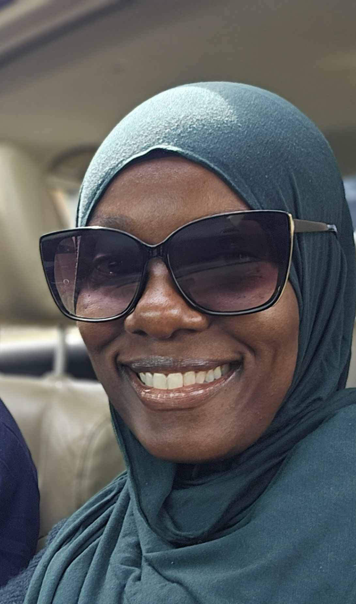
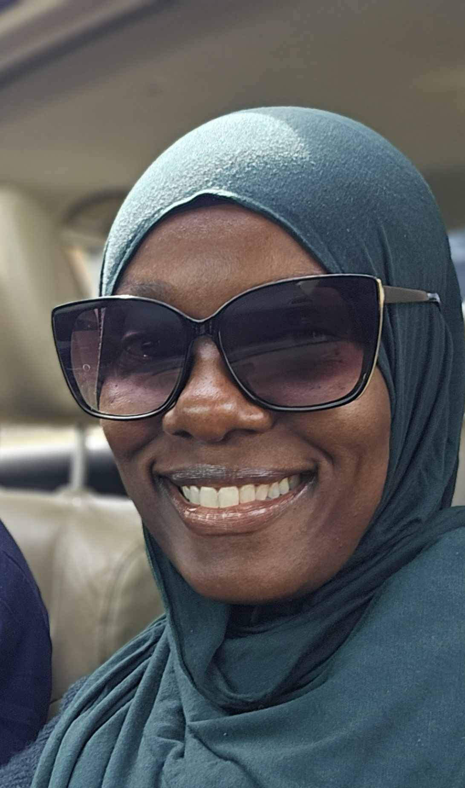

Introduction
I am embarking on the journey of becoming a software engineer with a unique set of experiences and circumstances that have somehow led me back to this path after almost 30 years to finish the thing that I started but did not complete. And I am excited!
Work Hours & Best Way To Communicate With Me
I intend to get my work done between 9am and 5pm, although I expect to work outside of these hours to complete homework and conduct research. For the purposes of this cohort, I will make myself available during the week until 7:30pm if anyone needs to contact me. After 7:30, I hope to give my undivided attention to my family and hopefully have a few minutes to myself by the end of the day.
The best ways to communicate with me are:
- Email: as a means to share detailed information with me.
- Google Chat: great for quick updates.
- Google Meets: an excellent option for scheduling meetings when a face-to-face is not possible.
- Phone call: for a direct, real-time response.
I check my email often and will reach back out to you shortly after. I have no problem with quick in-person chats related to work and/or projects.
What I'd Love To Help You With
It would be my pleasure to help you with any of the concepts we are tackling as I grasp them myself. I am not sure which aspects of this work will come with ease for me, but I love to share as I learn and grow. As I know from experience, helping others with ideas or concepts that I have obtained strengthens my understanding of those very same ideas. So as I am able to help you in whatever capacity I can, in that interaction, you are also helping me.
One Of My Goals For The Coming Year
My biggest goal for 2025 is to reach the end of the Code Differently 25.2 cohort with all of the skills outlined in the course syllabus. Over the last 2 months, I have rearranged things in my life to make room for this endeavor, and I will be extremely proud of myself to see this goal to fruition.
A Topic I Am Always Happy to Talk About
Reading. I love to read books. I am old school, so my preference is to have a physical book in hand as opposed to online reading from a screen or having my books read to me in audiobooks. I co-founded a book club during the pandemic and since its inception we have read over 30 books. In addition to book club books, I also have a running list of titles that I tackle independently. For a long time, I gravitated to biographies, autobiographies, and self-help books. My book club interactions have exposed me to different genres that I now enjoy. It is amazing just how much a good writer can convey between the front and back ends of a book.
Photo Gallery
 
